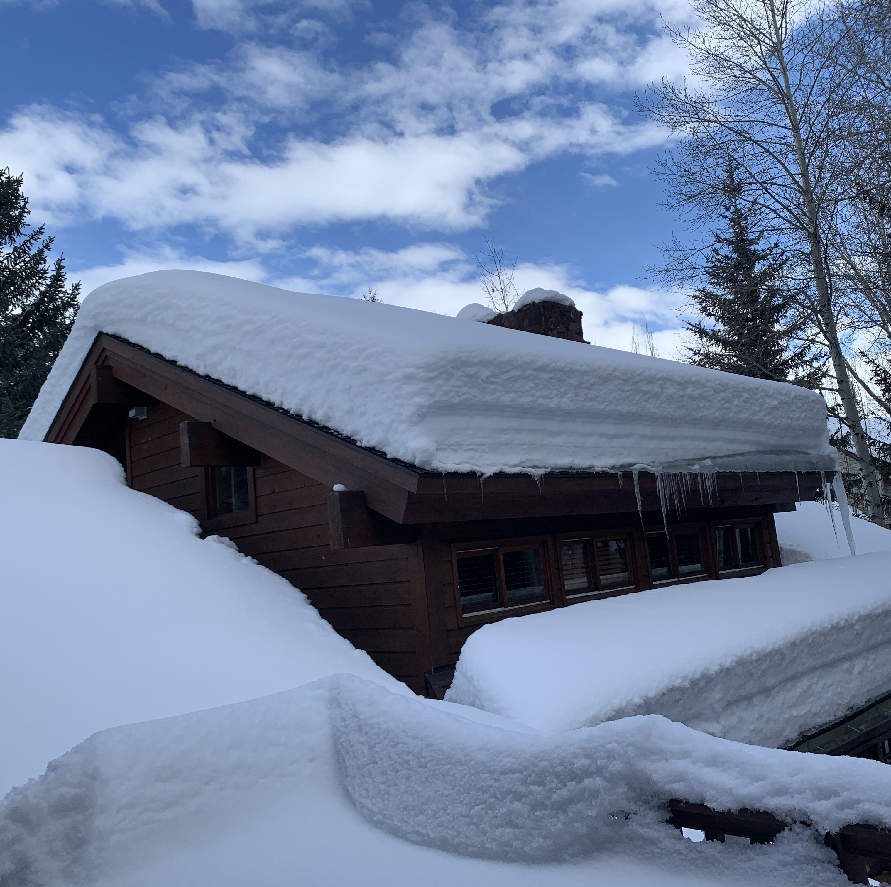

This webpage is for the Spring 2021 Journalism Design Toolkit class as part of the Journalism+Design department at Eugene Lang College for Liberal Arts at the New School University.
I am currently working and living in Sun Valley, Idaho where I grew up! This is the view from my porch!
This semester I am working on The New School Free Press! Here is a link!
Here is a link to my photo resize assignment
Here is a link to my my Grumpy's poster
And a link back to my GitHub back end